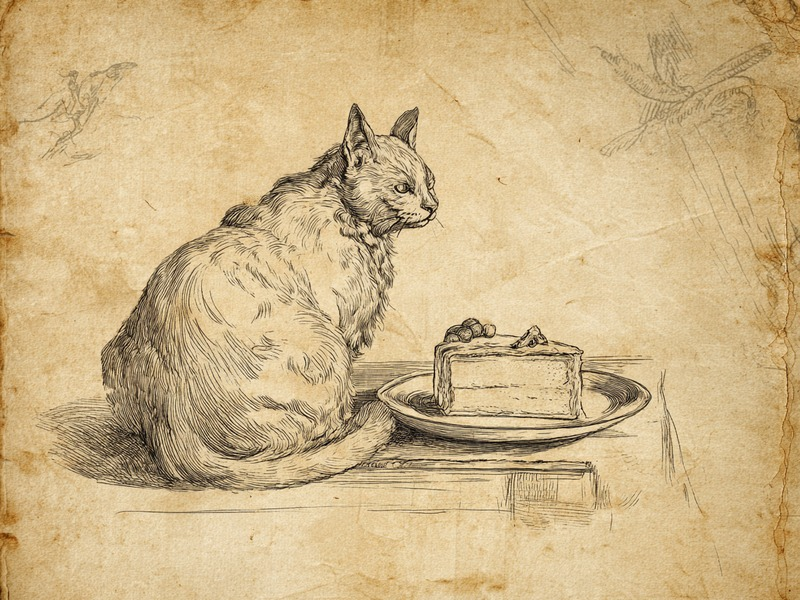

猫はそもそも甘味を感じる受容体を持っていません。遺伝子の欠損で作れなくなった、ネコ科全体のざんねんな共通点です。 Cats simply have no receptor for sweetness: a broken gene means the sweet sensor is never built, a sad little quirk shared across the entire cat family.
甘味センサーが最初から未完成
猫は甘味受容体の片方T1R2を作る遺伝子(Tas1r2)に欠損があり、受容体が組み上がらないため、舌に甘味センサーそのものが存在しません。甘さを感じるセンサー(甘味受容体)は、T1R2とT1R3という2つのタンパク質が組み合わさって初めて完成します。ところが猫の場合、T1R2の設計図にあたる遺伝子(Tas1r2)に大きな欠陥があります。遺伝子の中で実際に設計情報として読まれる部分(エクソン)のうち3番目で、247塩基対分がごっそり抜け落ちているうえ、途中に「ここで読むのをやめろ」という合図(停止コドン)まで入ってしまっているのです。そのため、まともなT1R2タンパク質は最後まで作られません。設計図は残っているのに機能しない、いわゆる「偽遺伝子」の状態です。相方のT1R3だけがあっても受容体は組み上がらず、猫の舌には甘味センサーそのものが存在しない、というざんねんな仕組みになっています。
出典: Li, X. et al. "Pseudogenization of a Sweet-Receptor Gene Accounts for Cats' Indifference toward Sugar" PLOS Genetics, 2005. journals.plos.org
トラもチーターも同じくざんねん
家猫だけでなくトラやチーターにも同じTas1r2の欠損が確認されており、肉食に特化した進化の結果だと考えられています。研究では家猫6匹に加えてトラ1頭、チーター1頭の遺伝子が調べられ、いずれも同じ欠損が見つかりました。つまり百獣の王も、地上最速のハンターも、そろって甘さを知らないまま生きているわけです。肉を食べる暮らしでは甘味を検知する場面がほとんどなく、センサーが壊れても困らなかったため、そのまま受け継がれてきたと考えられているのです。人間のスイーツを横目に無反応でいられるのは、ざんねんというより、猫なりに筋の通った進化なのかもしれません。
家猫だけでなくトラやチーターまで同じ遺伝子欠損を抱えているとなると、これはもうネコ科まるごとの体質と言えそうです。肉食に舵を切った進化の道すじが、甘味センサーという小さな部品に刻まれているわけです。